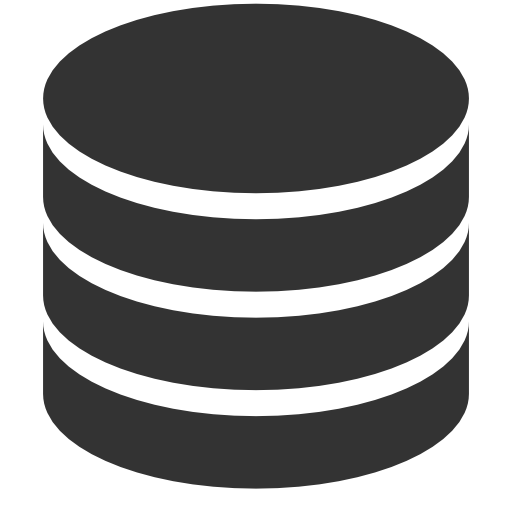

Choose Your API
|
Java Data Objects (JDO)
Java standard since 2001, providing transparent persistence and datastore agnosticity.
Comes with its own "Java syntax" JDOQL query language so you can use the Java syntax you already know to query your data.
Supports JDO3.2
Read More > |
Java Persistence API (JPA)
Java standard since 2006, providing easy persistence to RDBMS datastores.
Comes with its own "SQL-like" JPQL query language, so you query your data in a language similar to what your datastore understands.
Supports JPA2.1
Read More > |
REST API (JSON)
For web-based applications where you want to request objects from a server, and post object updates to the
server and be able to retrieve those objects at a later date.
Read More >
|
Choose Your Datastore
|  |
|
|
Documentation
Browse our extensive documentation for recent versions of DataNucleus AccessPlatform.
Explore the different APIs and features available for each datastore. Version 5.0 : Browse Online | PDF Version 4.2 : Browse Online | PDF Version 4.1 : Browse Online | PDF |
|
Download
Download the latest version as a convenient ZIP file with all dependencies :
Version 5.0 |
Version 4.2 |
Version 4.1
|
 |
Contribute
|
Tweets by @datanucleus | ||
|
Keep up to date
Follow the DataNucleus blog or Twitter (@datanucleus).
You can receive updates when features are added, or bugs are fixed that could impact on your application(s).
|